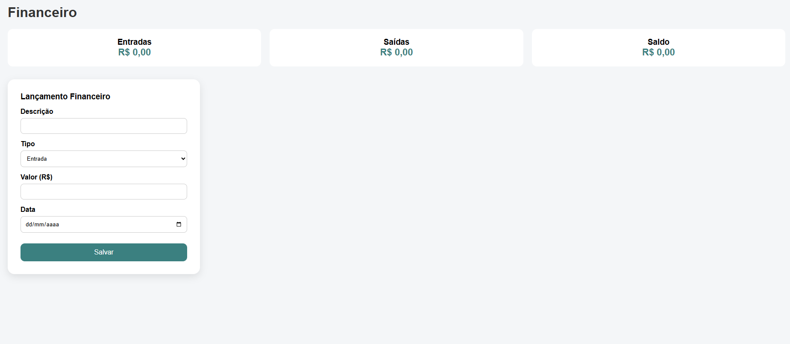

O Fisiomais é uma plataforma completa para organizar sua clínica, melhorar o atendimento aos pacientes e ter controle total do financeiro, agenda e relatórios.
Desenvolvido especialmente para clínicas de fisioterapia, o Fisiomais simplifica processos, reduz papelada e ajuda sua equipe a focar no que realmente importa: o cuidado com o paciente.
Cadastre pacientes, acompanhe evolução clínica e mantenha todo o histórico seguro e organizado.
Gerencie atendimentos, horários dos profissionais e evite conflitos de agenda.

Controle pagamentos, convênios, receitas e despesas da clínica em um só lugar.
Gere relatórios claros para tomada de decisão e crescimento da clínica.